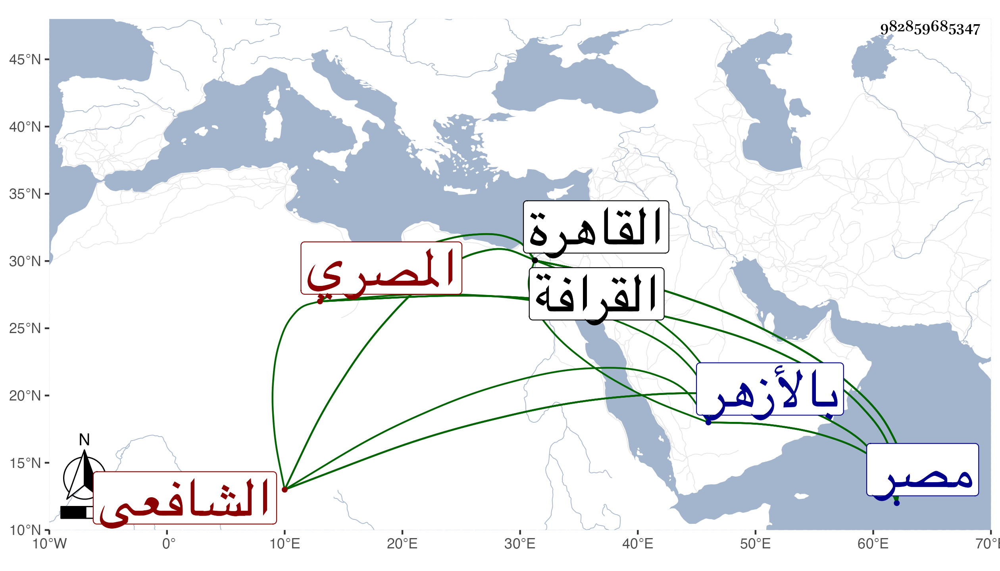

0902Sakhawi.DawLamic.ITO20230111-ara1.EIS1600.982859685347
Biography ID: 982859685347
559
علي بن أحمد بن أبي بكر بن أحمد وقيل عبد الله والأول أصح النور أبو الحسن الادمي ثم المصري الشافعي . تفقه بالولي الملوي وتأدب بادابه واشتغل كثيرا عليه وعلى غيره كالتاج السبكي أخذ عنه مصنفه جمع الجوامع تحقيقا وكذا الكثير من منع الموانع ومن التنبيه والمنهاج والتسهيل وأذن له في إقراء جمع الجوامع وانه لم يأذن لأحد في ذلك قبله وكذا أخذ القراءات السبع عن المجد إسماعيل الكفتي وأذن له فيها وسمع على العرضي في جامع الترمذي وعلى المظفر بن العطار والقلانسي في آخرين كالصلاح الزفتاوي ، قال شيخنا في معجمه : وأقام مدة بريف مصر يشغل الناس فانتفعوا به كثيرا ثم قدم مصر فقطنها وسمعنا منه على الصلاح الزفتاوي بل قرأت عليه في الفقه والعربية ، وكان عالما بالفقه والتفسير وآداب الصوفية حسن العقيدة على طريقة مثلى من الدين والعبادة والخير والانجماع والتقشف وربما تكلم على الناس مع شدة الخوف والمراقبة سمعت عليه من صحيح البخاري بسماعه من القلانسي ، وقال في إنبائه أنه تنبه وشغل وأفاد ودرس وأفتى وأعاد وشارك في الفنون وانتفع به أهل مصر كثيرا مع الدين المتين والسكون والتقشف والانجماع وكان يتكلم على الناس بجامع عمرو ثم تحول إلى القاهرة وسكن جوار الأزهر ، ومات في يوم الثلاثاء رابع شعبان سنة ثلاث عشرة عن نحو سبعين سنة وصلي عليه بالأزهر ثم بمصلى المؤمني ثم بالقرافة ودفن بها بالقرب من تربة التاج بن عطاء الله وتأسف الناس عليه ويقال أن الدعاء عند قبره مستجاب ويحكى أن الناصر فرج دخل يوما جامع عمرو وهو في حلقته فجاء إليه فلم يعبأ به بقيام ولا غيره بل منع جماعته من القيام له ، وكان زاهدا في الوظائف بحيث لم يكن باسمه تدريس سوى تدريس شخص يقال له التلواني بجامع الأزهر وأم به وكذا بجامع عمرو نيابة في كل منهما احتسابا . ذكره المقريزي في عقوده وكرره وقال في أولهما أنه لما ولي خطابة جامع عمرو وذلك في سنة خمس كان يقول في الخطبة : وصلى الله على سيدنا محمد فقال له صاحب الترجمة : مثلك لا يقول هكذا وإنما يقول : اللهم صل على محمد وعلى آل محمد قال : فجزاه الله خيرا فلقد نبهني على اتباع ما أمرنا به النبي صلى الله عليه وسلم في كيفية الصلاة عليه ، قال : وكان ينوب عني في إمامة الخمس به ، ولم يخلف بعده من الفقهاء مثله في سمته وهديه وحسن طريقته انتهى . وقد ذكرت في ترجمته من ذيل القراء جملة من ثناء الناس عليه رحمه الله وإيانا .
